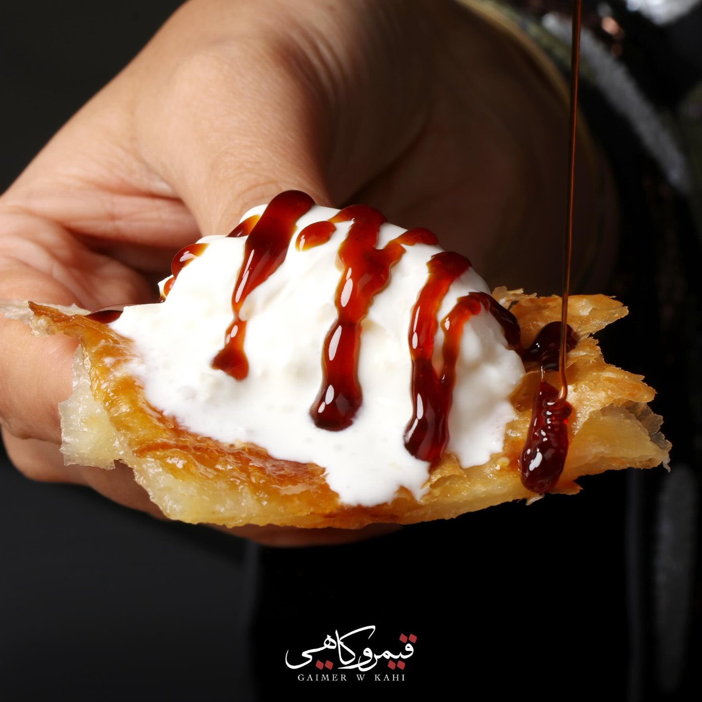
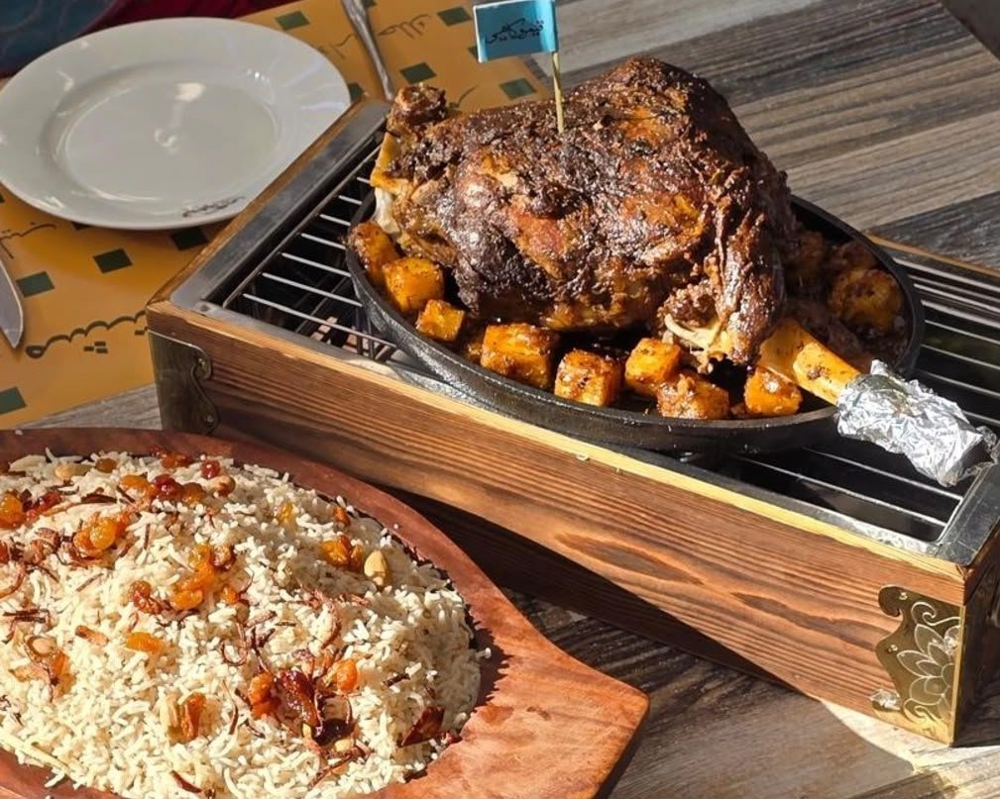
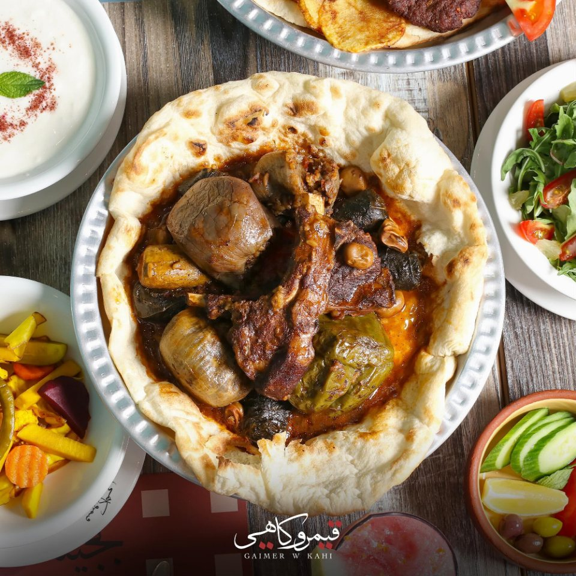
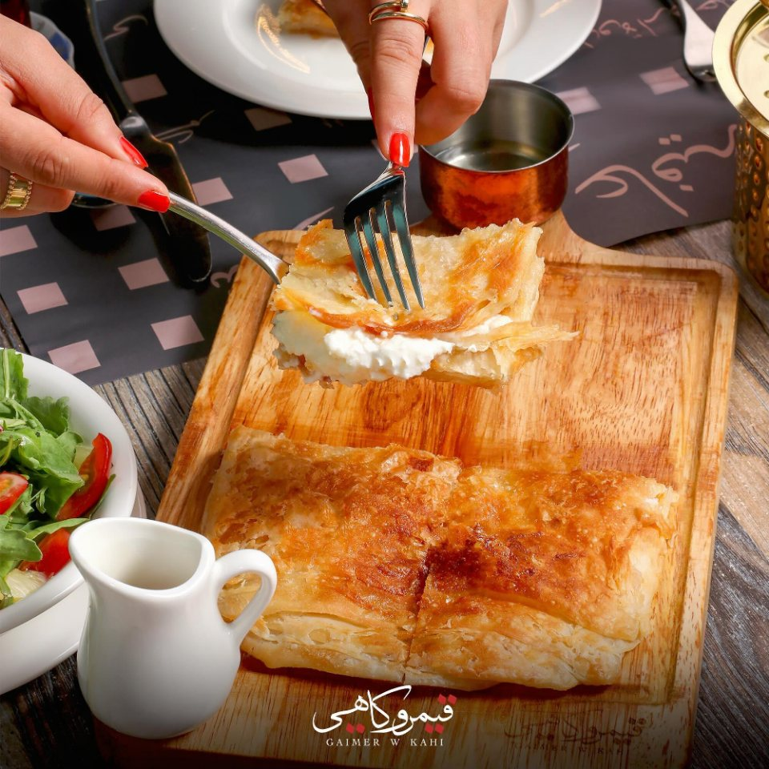
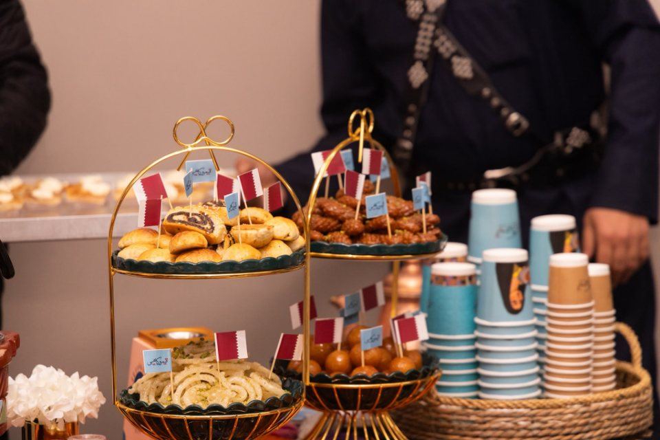
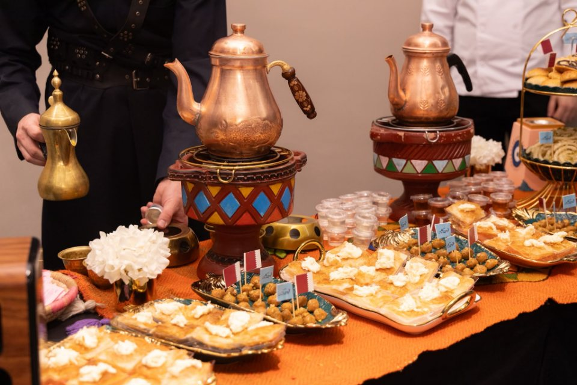
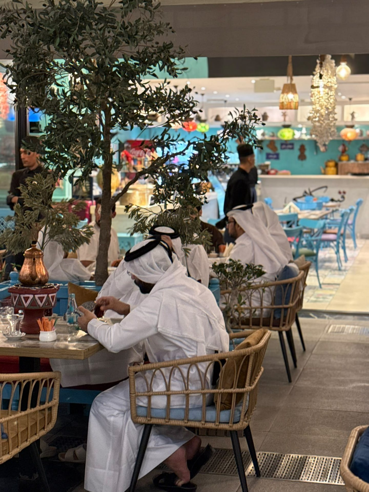
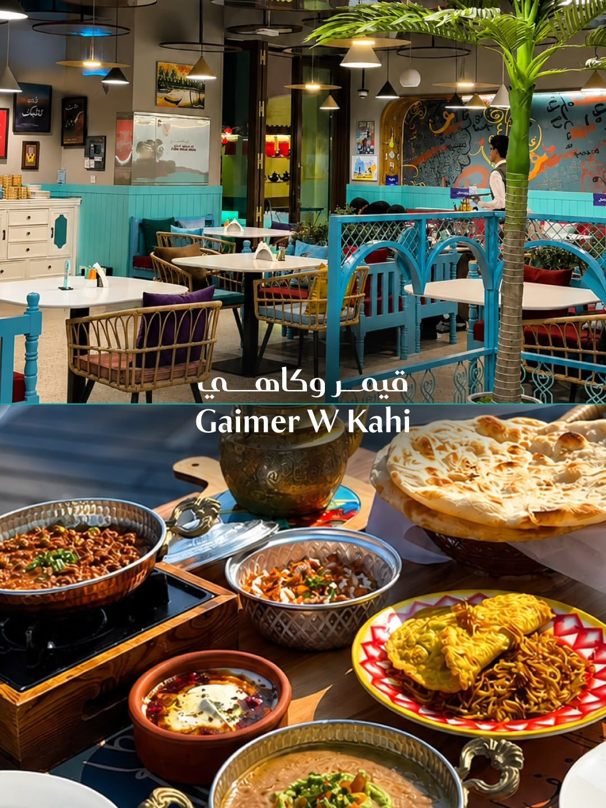
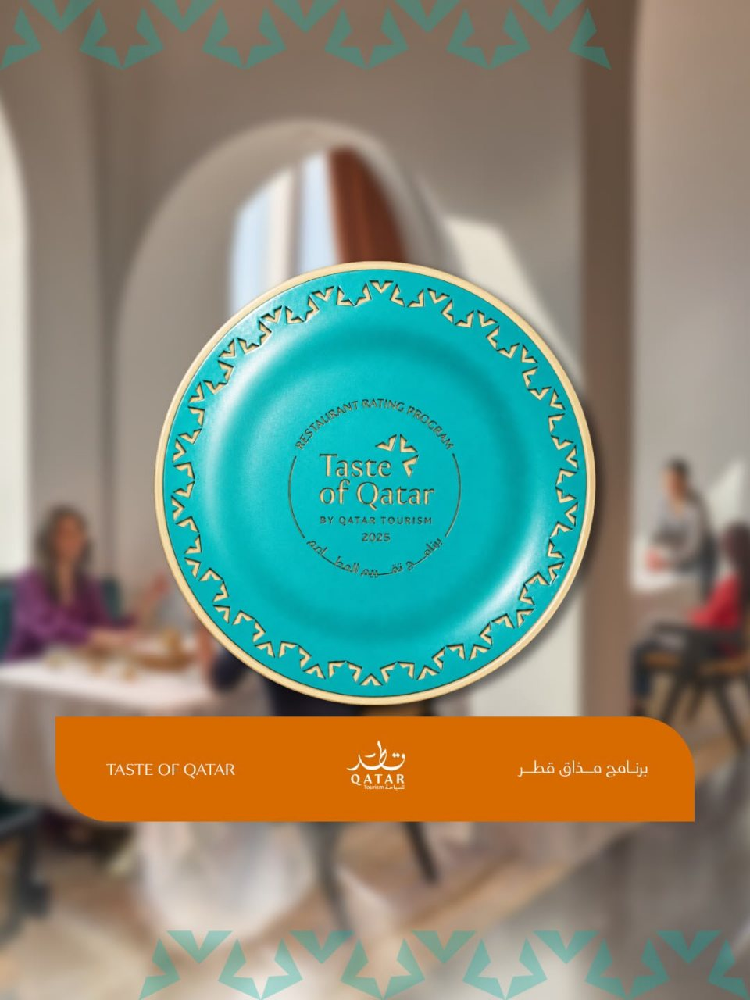

Kahi
An Iraqi plain puff — serves 1 to 2.
Pictured: kahi with gaimer (ordered alongside)
35 QAR
Iraqi & Gulf · Doha
Layers of flaky pastry soaked in syrup, topped with thick clotted cream — Iraq's most famous breakfast, now on two tables in Doha.


Where gaimer comes from
Gaimer is made from natural milk with no additives and no preservatives — the milk of Iraqi buffalo in the marshes and the river country, which graze on Iraqi grass and drink from the Tigris and the Euphrates. That is what made Iraqi gaimer without equal, until it came to be called gaimer al-Arab.
Kahi is the best known pastry in Iraqi cooking: an old dish people order at the bakery doors in the morning, and above all on the mornings of Eid — and they eat it with gaimer.
Ours brings together the delicacy of a mille-feuille and the warmth of a glazed cream doughnut, served with gaimer and date syrup. All our food is cooked with fresh local and seasonal produce, the way Iraqi cooking is meant to be.
Iraqi cuisine is the essence of a long heritage, complemented by the culinary influences of its neighbours — Iran, Syria and Turkey — which turned its daily dishes into a whole food pyramid that suits every season.

One piece, eaten by hand, with gaimer and date syrup.
From the restaurant
Shot at both branches. Tap to watch — nothing downloads before you tap, so none of your data is spent unless you want it to be.
From our table
Prices in Qatari Riyal, as printed in the restaurant's menu.
An Iraqi plain puff — serves 1 to 2.
Pictured: kahi with gaimer (ordered alongside)
Iraqi clotted cream — serves 1 to 2.

Foul mudamas, special falafel, lamb liver, egg with cheese.

Your choice of kahi with cheese or kahi with zaatar.

Iraqi mukadar tea, served in the istikan.

The large mukadar tea pot — served with its heater.
The full menu runs to 144 dishes — Iraqi grills, banquet trays, pastry and drinks. See the whole menu
The big table
Every photo here was taken by the restaurant; every name and price comes from the printed menu.





The menu carries four banquet trays, from 325 up to 1450 QAR. Banquet trays
The menu
Breakfast is served all day; the grill opens at 12 noon.
Locations


The record

Awarded by the Taste of Qatar Restaurant Rating Program — Qatar Tourism's official programme for rating the country's restaurants. This is a government assessment, not a customer poll.